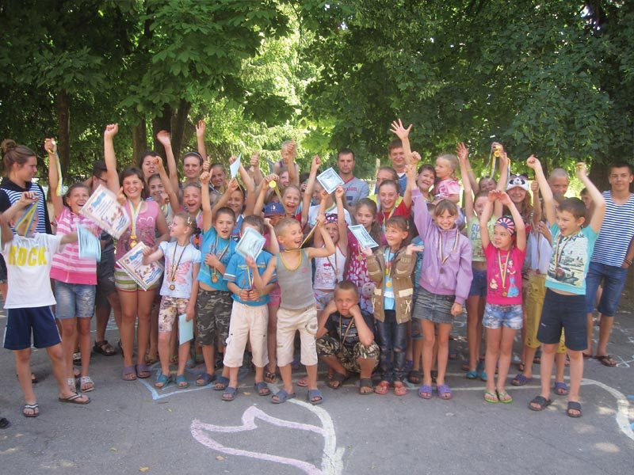
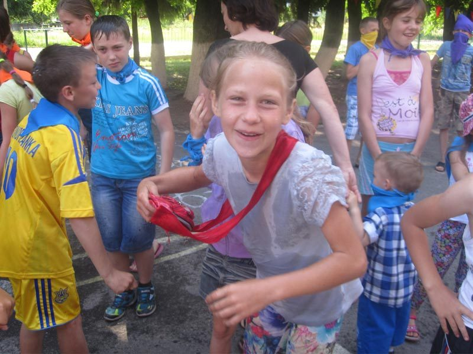
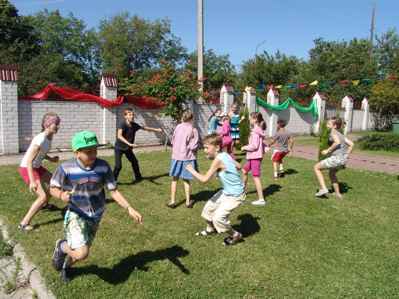
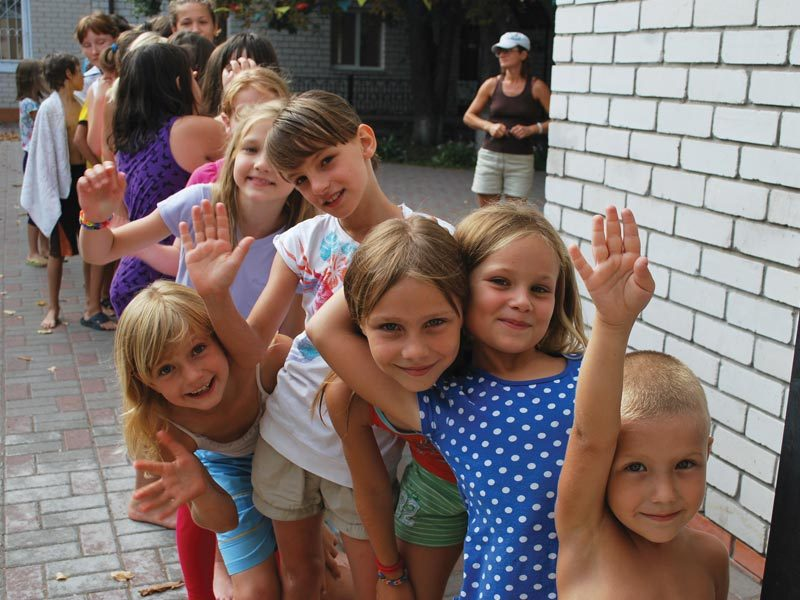
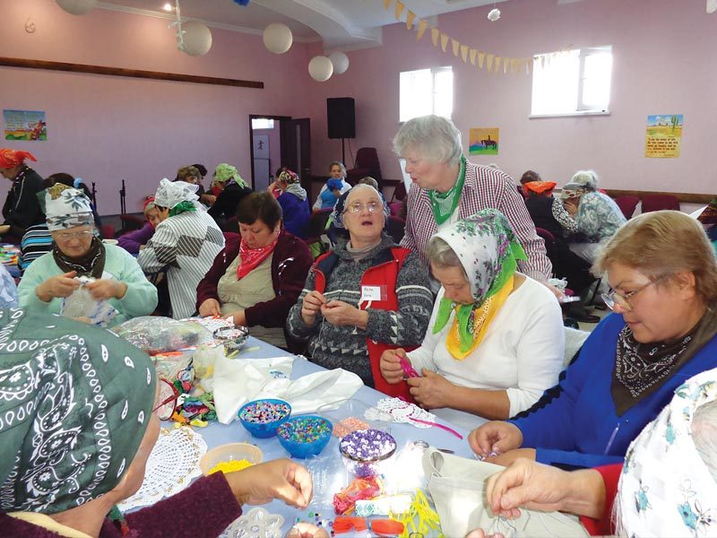
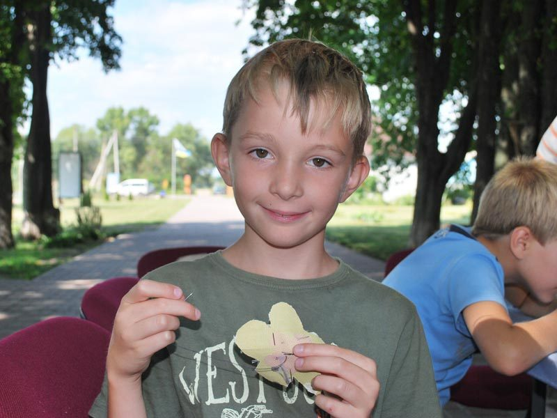

All through the summer, Kompas Park is host to hundreds of children, young people and widows. Each camp mixes games, craft and music with Bible teaching, and UK team members work side by side with Ukrainian leaders and interpreters.
Camp Preparation Week
Handy with a paintbrush? This week is for cleaning, mending and getting Kompas Park ready for the summer's visitors.

Alpha House Camp
Children aged 9 to 16 come to learn English, learn about the Bible, and have fun — and they love meeting their English visitors.

Children's and youth camps
Children and young people come for a wonderful holiday, and to discover just how much God loves them.


Camps for the disabled
Hope Now also supports camps for people who are visually impaired, deaf or physically disabled — a week made just for them.

Village camps
Out in the remote villages, Anastasiia runs camps for the children who can't come to Kompas Park.

Short-term service
Looking for a way to share your faith? A summer at Kompas Park might be just the thing. UK team members work alongside Ukrainian leaders and interpreters — get in touch with the office to find out how you could join a team, or download an application form.

Why it matters

How you can help — or come and serve
Your gift helps give a child or a widow a week at Kompas Park they will never forget. And if you'd like to be part of a UK team, we'd love to hear from you.